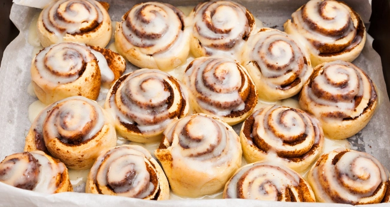

<!DOCTYPE html>
<html>
<head>
    <meta charset="utf-8" />
    <title>ItStep</title>
    <style>
      
        img {
            width: 80%;
            height: auto;
            display: block;
            border-radius: 10px;
            border: 2px #ccc solid;
        }

    </style>
</head>
<body>
    <div id="header"></div>
    <div id="container"></div>
       
    <script crossorigin src="https://unpkg.com/react@18/umd/react.production.min.js"></script>
    <script crossorigin src="https://unpkg.com/react-dom@18/umd/react-dom.production.min.js"></script>
    <script src="https://unpkg.com/@babel/standalone/babel.min.js"></script>

    <script type="text/babel">
        
        const styleObj1 = {
            color: '#333',
            textAlign: 'center'
    };

    const styleObj2 = {
        color: '#555',
        
    };

    const styleObj = {
                border: '2px solid #ccc',
                borderRadius: '10px',
                padding: '20px',
                maxWidth: '400px',
                margin: '20px auto',
                backgroundColor: '#f9f9f9',
            };

        ReactDOM.createRoot(document.getElementById("header"))
            .render(<h1 style={styleObj}>СИННАБОНЫ</h1>);
 
        ReactDOM.createRoot(document.getElementById("container"))
            .render(
            <div id="items" style={styleObj}>
                <h2 style={styleObj1} >Ингредиенты</h2>
                <ul>
                    
                    <li style={styleObj2}><strong>ДРОЖЖИ СВЕЖИЕ:</strong>20 ГР</li>
                    <li style={styleObj2}><strong>МОЛОКО:</strong>250 МЛ</li>
                    <li style={styleObj2}><strong>ЯЙЦА:</strong>2 ШТ</li>
                    <li style={styleObj2}><strong>САХАР:</strong>85 ГР</li>
                    <li style={styleObj2}><strong>СЛИВОЧНОЕ МАСЛО</strong>70 ГР</li>
                    <li style={styleObj2}><strong>МУКА</strong>600 ГР</li>
                    <li style={styleObj2}><strong>СОЛЬ</strong>5 ГР</li>
                    <li style={styleObj2}><strong>РАСТИТЕЛЬНОЕ МАСЛО:</strong>ДЛЯ СМАЗЫВАНИЯ ЕМКОСТИ</li>
                    <li style={styleObj2}><strong>САХАР ДЛЯ НАЧИНКИ</strong>125 ГР</li>
                    <li style={styleObj2}><strong>МАСЛО СЛИВОЧНОЕ ДЛЯ НАЧИНКИ:</strong>50 ГР</li>
                    <li style={styleObj2}><strong>РИКОТТА/МАСКАРПОНЕ ДЛЯ КРЕМА</strong>175 ГР</li>
                    <li style={styleObj2}><strong>МОЛОКО ДЛЯ КРЕМА</strong>50 ГР</li>
                    <li style={styleObj2}><strong>САХАРНАЯ ПУДРА ДЛЯ КРЕМА</strong>50 ГР</li>
                </ul>
                <h2 style={styleObj1} >Инструкция приготовления</h2>
                <ul>
                    <li style={styleObj2}><strong>1:</strong>В 200 мл теплого молока добавляем 1 ст. ложку сахара - тщательно размешиваем.</li>
                    <li style={styleObj2}><strong>2:</strong>Добавляем дрожжи и оставляем на 10 минут, пока дрожжи начнут работать.</li>
                    <li style={styleObj2}><strong>3:</strong>75 гр. размягченного сливочного масла взбиваем с 75 гр. сахара.</li>
                    <li style={styleObj2}><strong>4:</strong>Добавляем яйца, не переставая взбивать.</li>
                    <li style={styleObj2}><strong>5:</strong>Дрожжи поднялись, задышали - отправляем их в масляно-сахарную смесь-размешиваем.</li>
                    <li style={styleObj2}><strong>6:</strong>Добавляем муку последовательно и соль, ванилин, замешиваем мягкое тесто. Если тесто липнет, можно добавить 50 гр. муки, чтобы собрать комок. Вымешиваем тесто около 10 минут и отправляем на час для поднятия. Тесто должно увеличится в два раза.</li>
                    <li style={styleObj2}><strong>7:</strong>Для начинки берем 130 гр. сахара и 15 гр. корицы и тщательно размешиваем.</li>
                    <li style={styleObj2}><strong>8:</strong>Время прошло. На стол слегка делаем подсыпку. Распластав тесто виде прямоугольника, складываем тесто, оставляем еще на 20 минут, чтобы тесто отдохнуло.</li>
                    <li style={styleObj2}><strong>9:</strong>В виде прямоугольника, раскатываем тесто, толщиной где-то 6-8 мм.</li>
                    <li style={styleObj2}><strong>10:</strong>Смазываем тесто сливочным маслом.</li>
                    <li style={styleObj2}><strong>11:</strong>Обсыпаем начинкой.</li>
                    <li style={styleObj2}><strong>12:</strong>Собираем в плотный рулет.</li>
                    <li style={styleObj2}><strong>13:</strong>При помощи лески, разрезаем рулет на 12 одинаковых частей. Ножом советую не разрезать, форма булочек испортится. Очень удобно разрезать леской.</li>
                    <li style={styleObj2}><strong>14:</strong>Возьмите леску 40 см на концы привяжите пробки от вина-очень удобно и аккуратно разрезать рулет. Режем рулет следующим образом: приподнимаем заготовку и запускаем под нее леску (по уровню насечки). Теперь приподнимаем оба конца лески, перекручиваем их крест-накрест и разводим в стороны. Таким образом одним движением отрезается аккуратный и ровный кусок рулета. Вот так аккуратно режем на одинаковые кусочки.</li>
                    <li style={styleObj2}><strong>15:</strong>Аккуратно выкладываем на противень. Даем мини-рулетикам отдохнуть в течение 30-35 минут в теплом месте. За это время тесто расстоится и заготовки округлятся.</li>
                    <li style={styleObj2}><strong>16:</strong>Смазывать поверхность не нужно - это сдобное дрожжевое тесто зарумянится самостоятельно. Затем отправляем в заранее разогретую духовку до 180 градусов на 25 минут.</li>
                    <li style={styleObj2}><strong>17:</strong>Синнабоны испеклись.</li>
                    <li style={styleObj2}><strong>18:</strong>Готовим помадку - 40 гр. распущенного мягкого сливочного масла взбиваем со 100 гр. сливочного сыра и добавляем 150 гр. сахарной пудры.</li>
                    <li style={styleObj2}><strong>19:</strong>В горячем состоянии промазываем синнабоны нежнейшей ароматной карамельной помадкой. За счет тепла помадка начнет таять, стекать, попадая в разрезы рулетиков и пропитывая их.</li>
                    <li style={styleObj2}><strong>20:</strong>Восхитительные, невероятно ароматные и вкусные булочки Синнабон - это верх блаженства для любителей дрожжевой выпечки. Я думаю, что вам понравился рецепт этих вкусных синнабон. Приятного чаепития!!!</li>
                </ul>
            </div>)
            
    </script>
</body>
</html>
